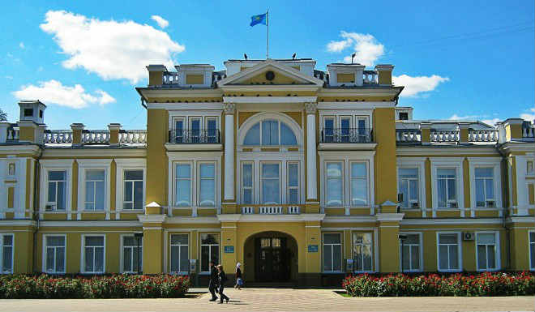
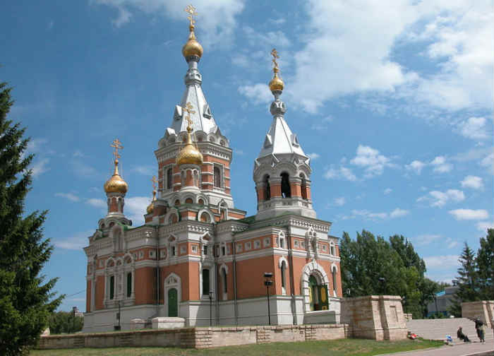
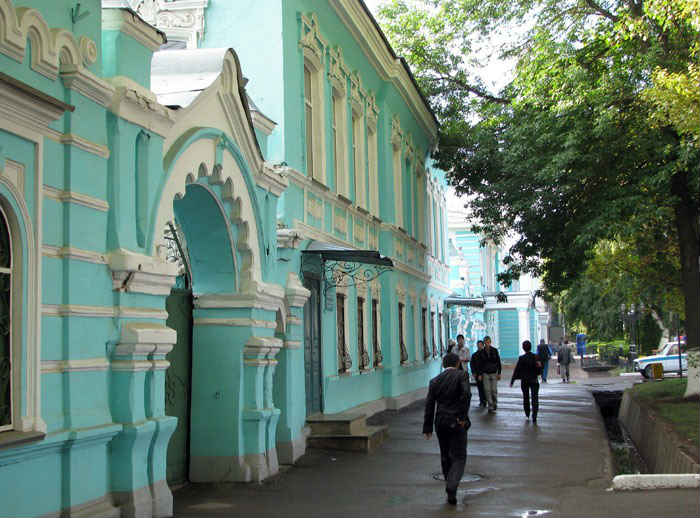

Oral (Kazakh: Орал, romanized: Oral (listen)), known in Russian as Uralsk, is a city in northwestern Kazakhstan, at the confluence of the Ural and Chagan rivers close to the Russian border. As it is located on the western bank of the Ural river, it is considered geographically in Europe. It is the capital of the West Kazakhstan Region.
The climate of Oral is continental with long cold winters and warm, often hot summers. Under the Köppen climate classification, Oral has a cold semiarid climate (Köppen Bsk). Summers are extremely hot considering its position north of the 51st parallel, but winters are more reminiscent of continental climates further east than Europe.
Oral, Russian Uralsk, also spelled Ural’sk, city, western Kazakhstan, along the Ural (Zhayyq) River. Founded in 1613 or 1622 by Cossacks fleeing a tsarist punitive campaign, it was known as Yaitsky Gorodok until 1775, when its name was changed following the Pugachov Rebellion. The town was a centre of both the Stenka Razin (1667) and Yemelyan Pugachov (1773) uprisings and was the headquarters of the Ural Cossacks. It had a lively trade with European Russia in fish from the Ural River and livestock products from the Kazakh steppes. Its commercial importance began to decline in the early 20th century when the new railway to Turkistan bypassed it. Oral’s industries today include leather and footwear, meatpacking, flour milling, some engineering, and a licorice works. The city has teacher-training and agricultural institutes, the oldest theatre in Kazakhstan, and a museum with historic Cossack mementos.
Some facts about Oral:
Akzahyik River is the river dividing Asia and Europe on the world map. The Akzhayik flows thorugh the city of Oral. The Oral originally was founded on the right side of Akzahyik River and counted as a strategically important river for our country.
Some factsabout Akzhayik River:
There are a lot of students from Oral studying at our university. Also there are a lot of students from all over the world in our university.
Visit the link to see students from all over the world studying at NU!
I am grateful for studying at our university. I am grateful for the provided opportunity to take an admission exams. I found out about the admission exams through the West Kazakhstan educational website.
Visit the link to see a plan of Oral city`s educational management for 2023!
Oral is an old city with lots of history. Since the city was mainly Russian Empires headquarters in the 1700s and 1800s there are a lot of old buildings that were built during that era. Below you can see some images of these old buildings
  